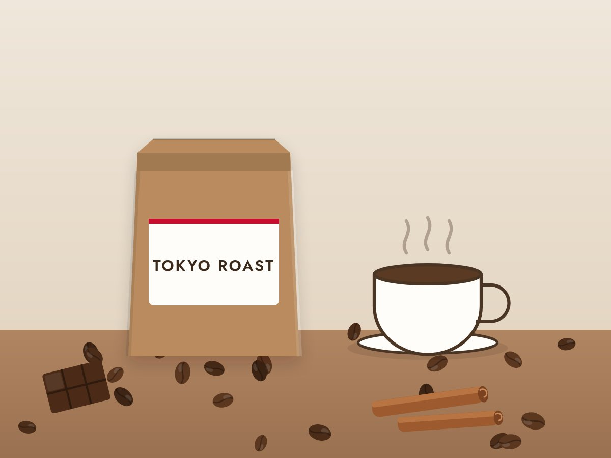
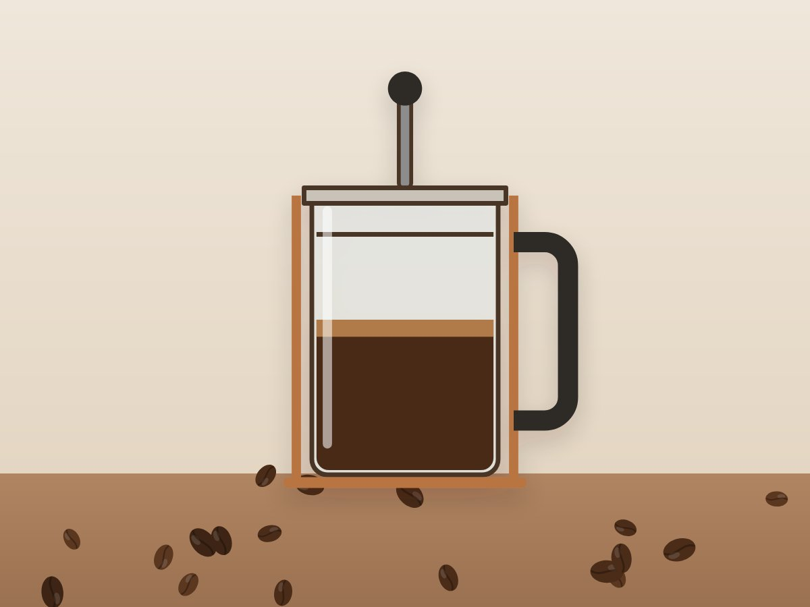
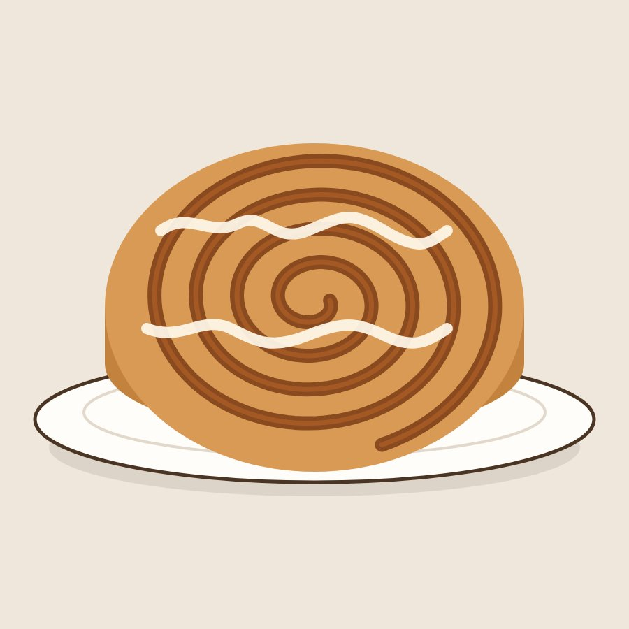
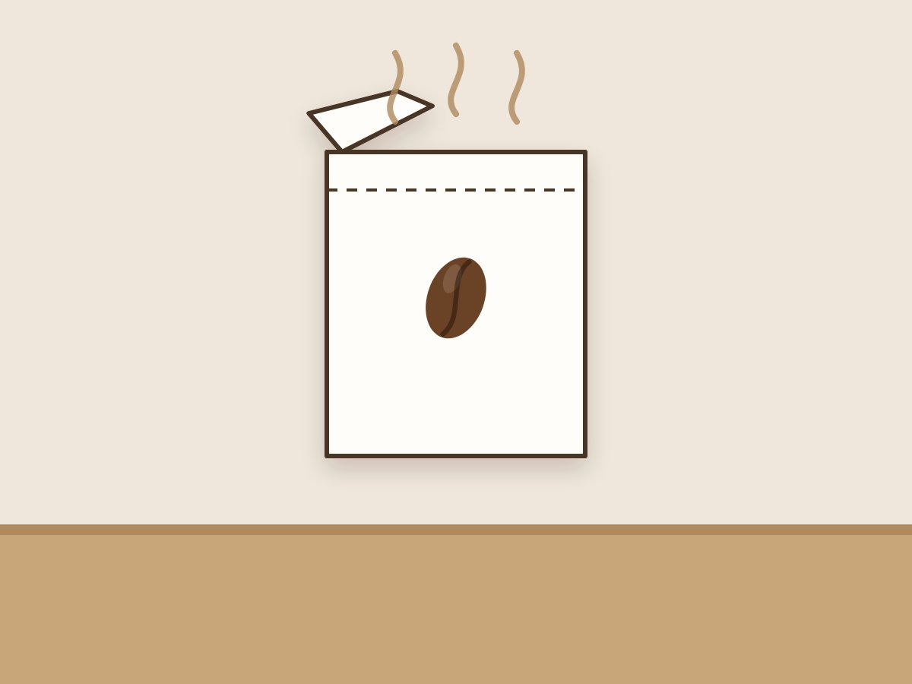
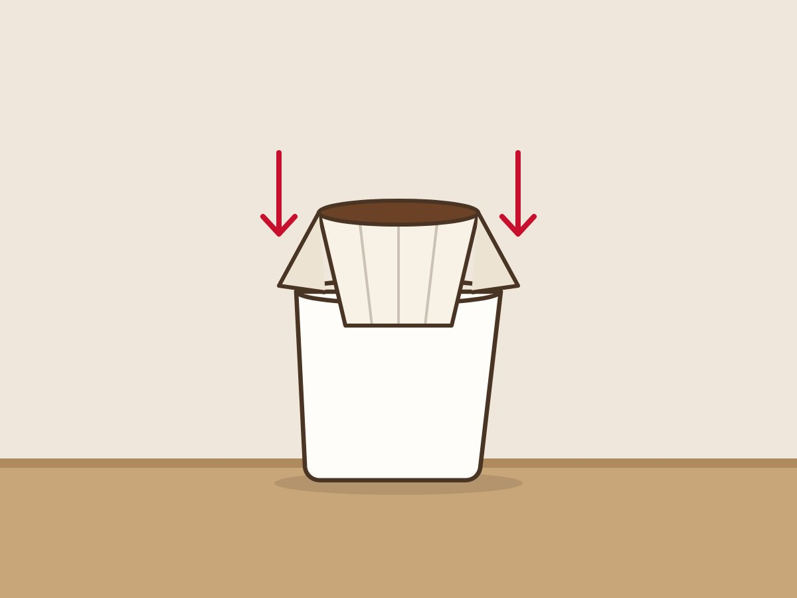
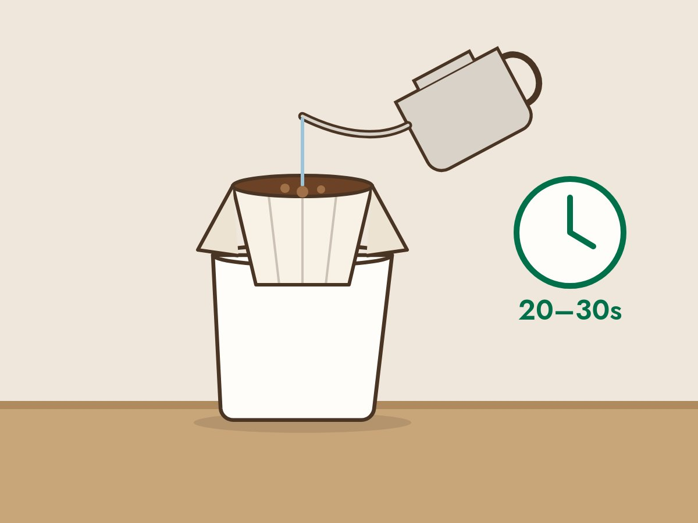
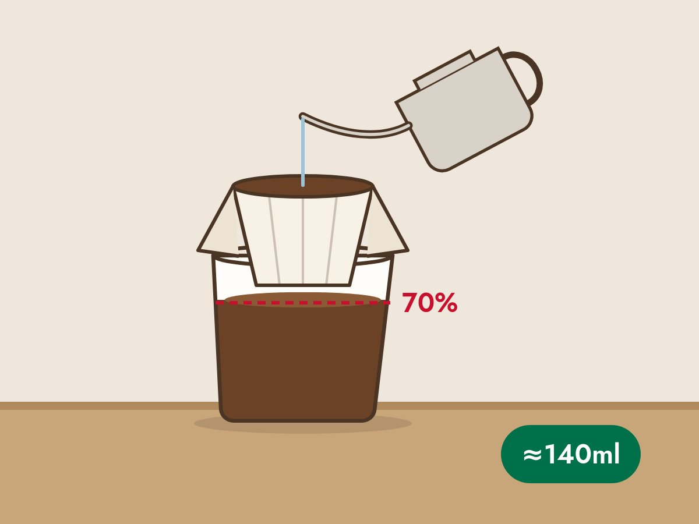

Ⅰ
自己紹介、
自己紹介、
コーヒーパスポートと
サポートツールの確認
Ⅱ
コーヒーテイスティング

本日のコーヒー
TOKYO ロースト
- 中目黒にあるスターバックス リザーブ ロースタリーで焙煎
- まろやかで心温まる味わいが特徴
- シナモンやチョコレートと相性抜群

抽出方法
コーヒープレス
- コーヒーの油分をダイレクトに抽出していて、香りが豊か
- 自宅でも簡単に抽出可能
- 店舗でもプレスサービスとして販売（すべての豆が対象）
テイスティングのステップ
1/ 4
STEP 1
香りをかぐ
まずは香りを楽しみます
STEP 2
すする
音を立てて一気にすすります
STEP 3
口の中に広げる
口の中でコーヒーの酸味やコクを感じます
STEP 4
自分の言葉で表現する
酸味、コク、風味など自由に表現します
Ⅲ
フードペアリング
フードペアリングとは
コーヒーとフードの素敵な関係
- フードと相性がよいコーヒーを選ぶことで、おいしさを引き立て合う
- HPや店頭でフードに合うコーヒーを簡単に知ることができます！
相性の良いフレーバー例
パイク プレイス® ロースト
- ナッツ
- チョコレート
- シナモン
スマトラ
- シナモン
- オートミール
- メープル
- バター
- トフィー
- チーズ
ペアリングのステップ
1/ 4
STEP 1
香りを楽しむ
コーヒーとフードの香りを楽しみます
STEP 2
コーヒーのみを味わう
テイスティング同様にすすり、口の中へ広げます
STEP 3
フードのみを味わう
香りや食感に注目します
STEP 4
再度コーヒーを味わう
フードが口の中にあるうちにコーヒーを味わいます
Let's try!!

Ⅳ
ORIGAMI® 抽出体験
スターバックス
ORIGAMI® とは
- 香り豊かなコーヒーを特別な器具なしでいれられるコーヒー
- 名前の由来は、コーヒーの粉を一杯ずつ丁寧に包む所作が、日本の伝統文化「折り紙」と重なることから
いれ方
1/ 4

STEP 1
ドリッパーを開封する
開封時の香りも楽しみます！

STEP 2
カップに固定する
カップの中央に足部分をセットします

STEP 3
一回目の注湯
20〜30秒蒸らします（お湯は細めにゆっくりと）
30秒

STEP 4
2回目の注湯
水位7割で一度止め、下がったら再度注ぎます（出来上がり約140ml）
Ⅴ
記念品贈呈、
記念品贈呈、
まとめ、質問コーナー
今日のおさらい
TOKYO ロースト
まろやかで心温まる味わいが特徴
シナモンやチョコレートと相性抜群
テイスティング 4ステップ
- 香りをかぐ
- すする
- 口の中に広げる
- 自分の言葉で表現する
ペアリング 4ステップ
- 香りを楽しむ
- コーヒーのみを味わう
- フードのみを味わう
- 再度コーヒーを味わう
ORIGAMI® のポイント
細めのお湯をコーヒーの粉の中心に丁寧に注ぐことがポイント
質問コーナー
お知らせ